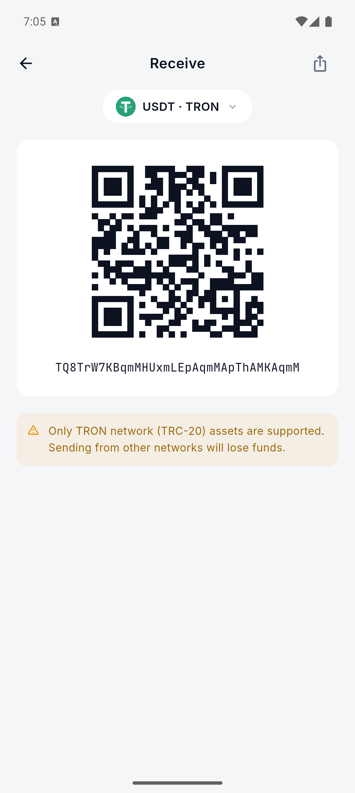
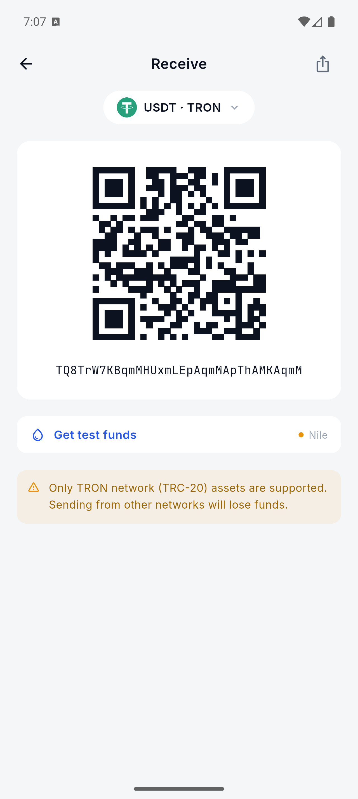
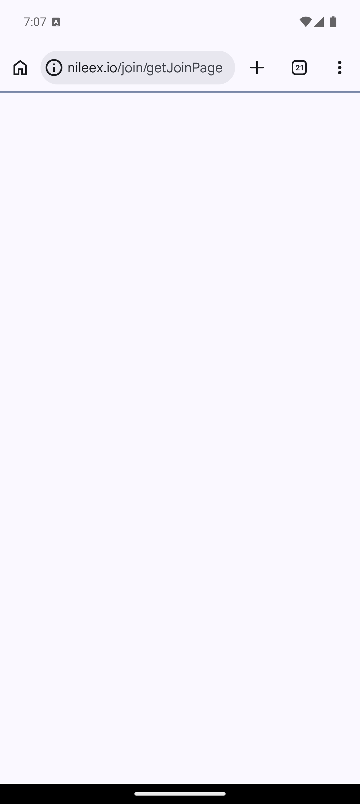
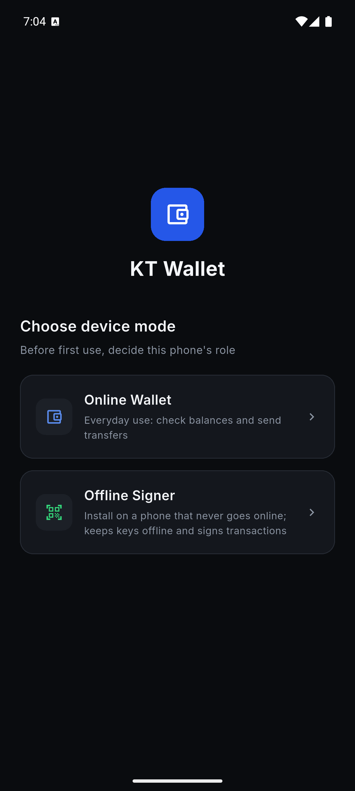
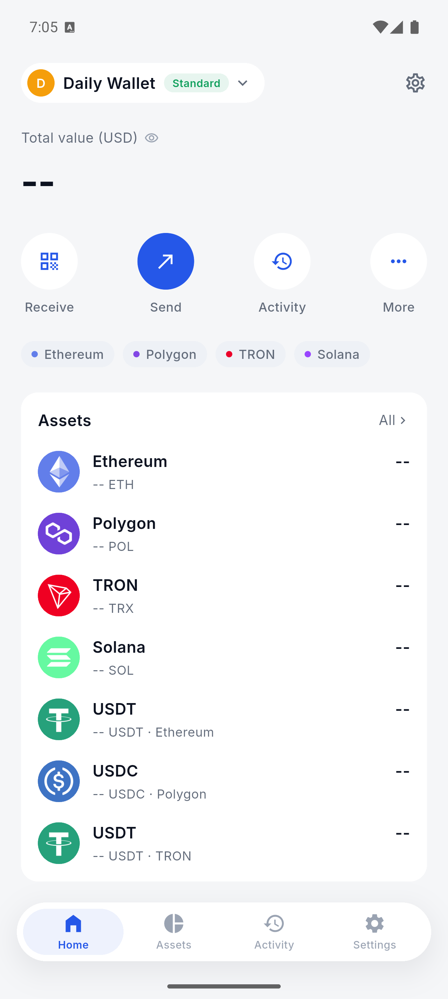
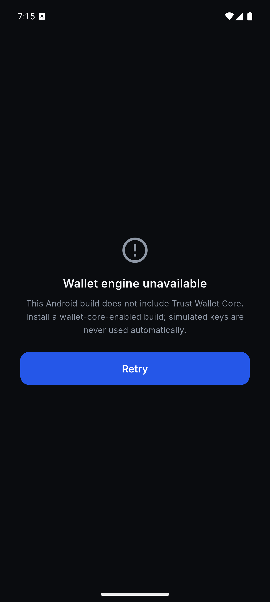

App 功能修复验收报告
真实分享、测试币水龙头、收款二维码与安全失败关闭
327联网钱包测试通过
104离线签名器测试通过
0Dart 静态分析问题
4关键交互完成真实接线
修复矩阵
入口
修复结果
状态
领取测试币
Solana Devnet 保持真实 RPC 空投；Sepolia、Amoy、Nile 改为调用系统浏览器打开对应水龙头，不再复制 URL。
已验证
分享地址
接入 Android/iOS 系统分享面板，分享内容包含网络名称和当前钱包地址。
已验证
收款二维码
用
KtQrCode 编码当前链的真实地址，切换链时二维码数据同步更新。已测试
区块浏览器
Token 与交易详情的外链图标改为打开系统浏览器，不再只复制链接。
已测试
扫码失败回退
生产环境相机不可用时不再通过点击注入模拟地址、账户或签名帧；模拟回退仅保留在测试环境。
失败关闭
转账身份验证
生物识别不可用时不再直接放行；钱包 PIN 必须经过 PBKDF2 校验，正确后才能继续。
失败关闭
Android 密钥引擎
生产入口统一调用原生
MethodChannelCoreCrypto。未链接 Trust Wallet Core 时显示明确错误并阻断，不再自动回退到模拟助记词和地址。失败关闭
Android 文案
“Face ID”改为跨平台的“生物识别”，避免 Android 展示 iOS 专有术语。
已修复
Android 模拟器证据






KT_ALLOW_MOCK_CRYPTO=true 构建时允许模拟器进入完整 UI。自动化验证
PASS
无静态分析问题。
dart analyze .无静态分析问题。
PASS
327 项测试通过。
apps/kt_wallet: flutter test327 项测试通过。
PASS
104 项测试通过。
apps/cold_signer: flutter test104 项测试通过。
PASS
默认失败关闭包与显式 UI 验收包均构建、安装成功。
flutter build apk --debug默认失败关闭包与显式 UI 验收包均构建、安装成功。
仍需外部条件的边界
Android 真实 Wallet Core 仍需要 GitHub Packages 凭据。
官方 Android AAR 目前仍要求 GitHub token（
read:packages）。默认生产语义构建已改为明确失败关闭，不再自动使用 MockCoreCrypto。此外，仓库内 Android WalletCoreBridge.sign 的逐链私钥注入仍是结构性失败关闭实现；正式处理真实资产前必须完成该实现、固定向量测试和真机验收。